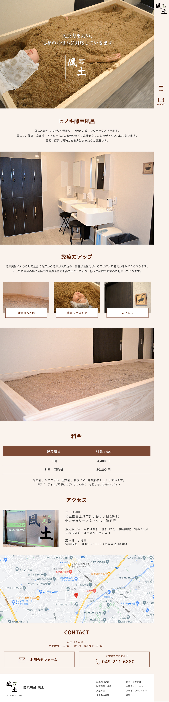
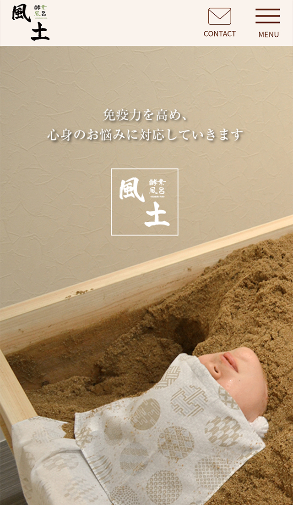
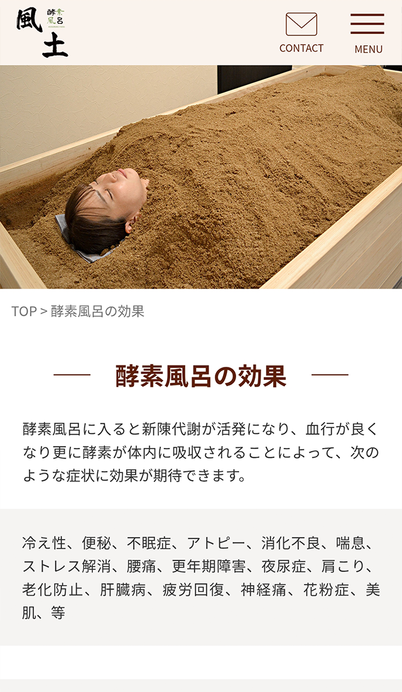
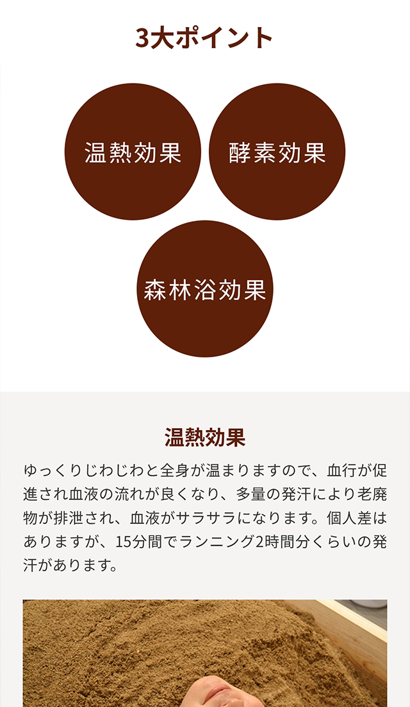

酵素風呂 風土
- Category
- 酵素風呂店舗サイト
- Year
- 2022年
- Project
- WEBサイト新規
- Part
- 情報設計 / 画面設計 / UIデザイン / フロントエンド実装
- Tool
- Photoshop / Illustrator / Dreamweaver / HTML / CSS / Javascript
郊外型・男女利用可能な酵素風呂店舗の新規開店サイトを制作。 「自然の温もり」と「通いやすさ」を軸に、 情報設計からデザイン・実装まで一貫して担当。




背景・課題
郊外エリアに新規開店する酵素風呂店舗のWebサイトを制作。
課題は「酵素風呂の認知促進」と 「初回利用への不安を軽減する情報設計」。 男女利用可という特長を明確に伝える必要があった。
郊外型店舗のため、 駐車場情報やアクセス導線の明確化も重要な要素。
制作フロー
01
コンセプト整理
「自然」「通いやすさ」「男女利用可」を軸に
サイト全体の方向性を定義。
02
情報設計・デザイン
料金・利用の流れ・FAQを整理。
ナチュラルな色設計で安心感を演出。
03
実装
スマートフォン最適化を前提に構築。
固定お問合せボタンを設置し、CV導線を強化。
意識したこと
中立的なデザイン設計
男女どちらも利用しやすい配色とトーンで設計。
価格情報の可視化
料金を明確に表示し、 迷わない価格表示を設計。
不安を解消するFAQ設計
初回利用前の疑問を想定し、 来店ハードルを下げる構成を構築。
モバイル優先設計
SNS流入を想定し、 スマートフォン中心のレイアウト設計。
ふりかえり・改善点
現在はホットペッパー経由での予約が中心となっており、 サイト内に専用予約フォームを設置していない点が課題でした。
今後は自社サイト内に予約導線を設けることで、 直接予約の増加や顧客データの蓄積につなげられる設計を 提案していきたいと考えております。